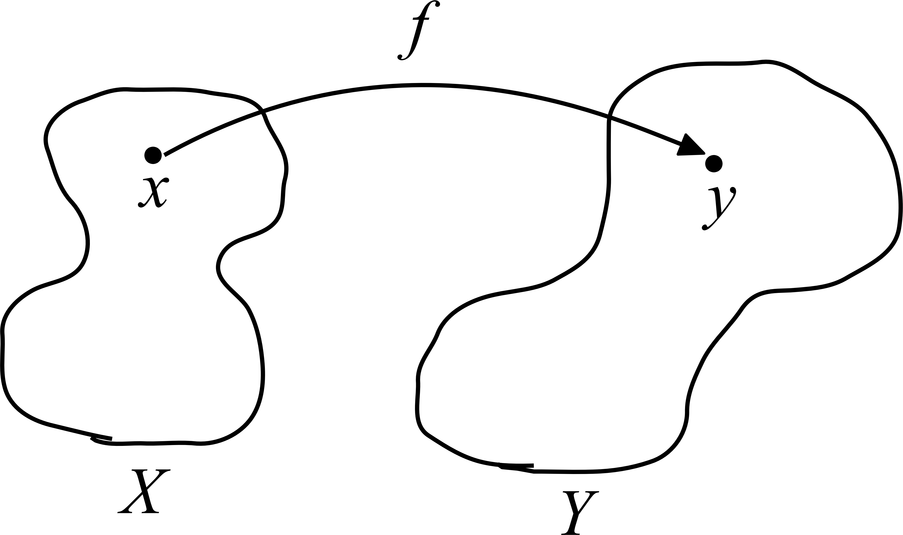
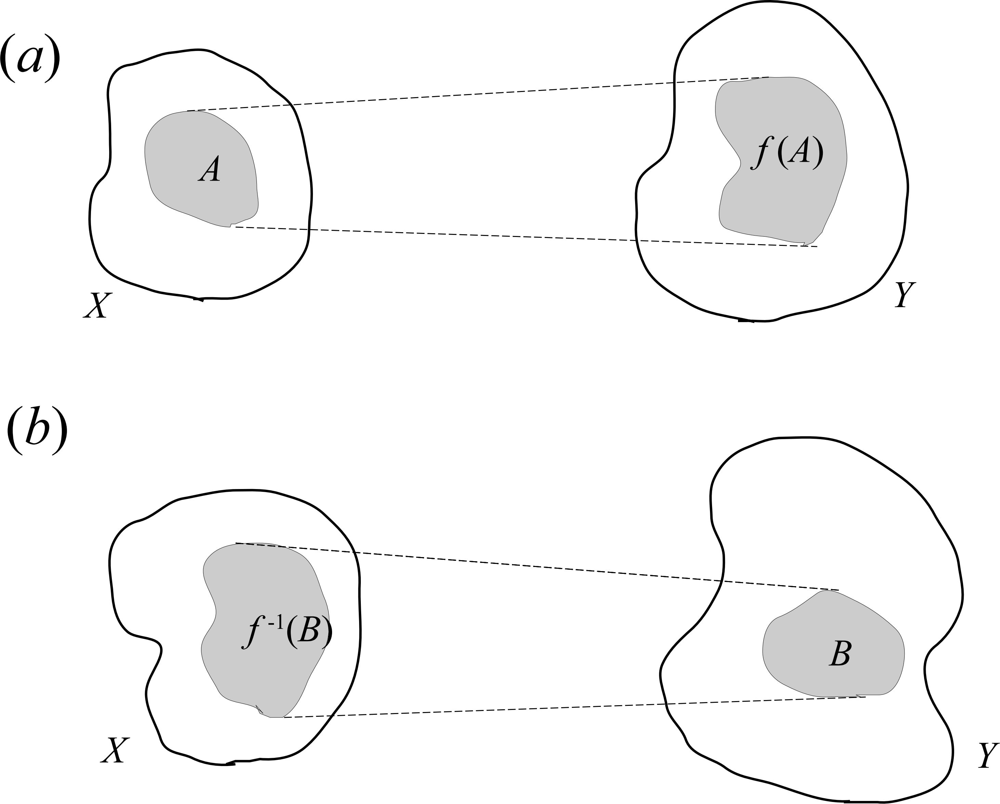
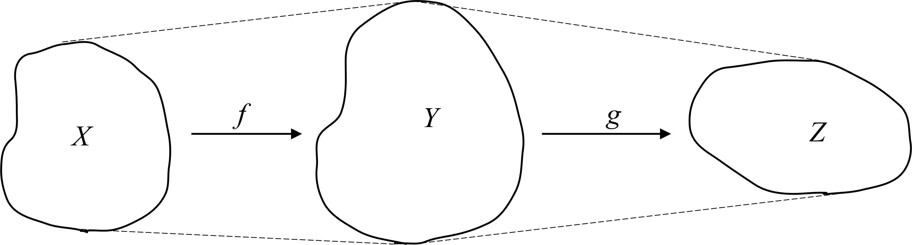
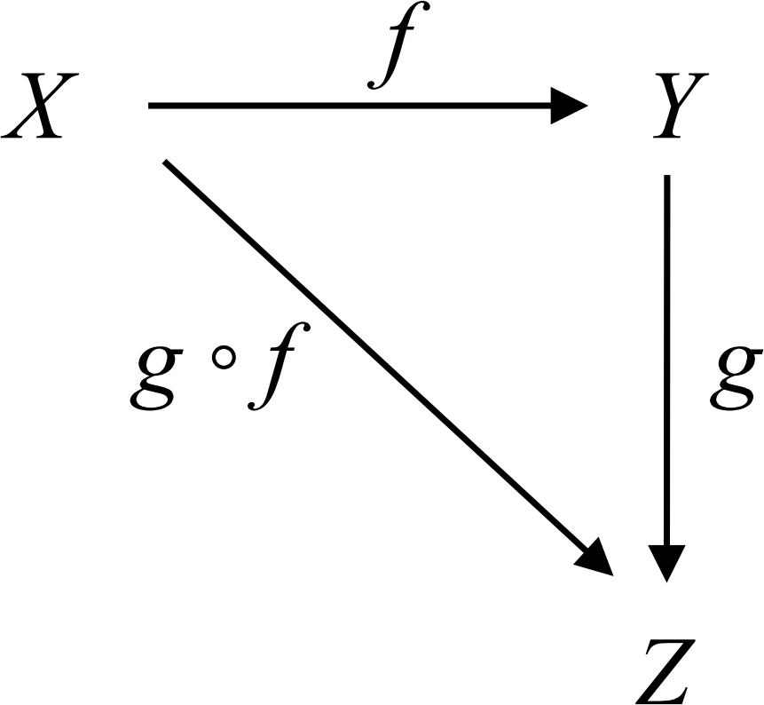
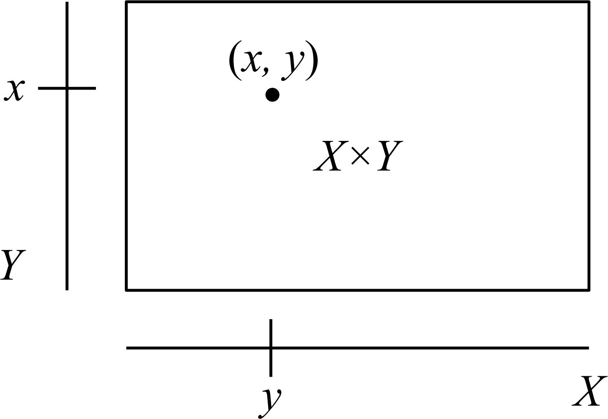

1-1 集合と写像
[[TOC]]
集合
数学ではものの集まりをひとまとめにして，集合 (set) $A$ といい，$A$ に属するもの $a$ を元または要素 (element) という。$a$ が $A$ の元であることを，$a\in A$ と書く。元を全く含まない集合を空集合 (empty set) といい，$\phi$ で表す。元 $a_1\cdots a_n$ からなる集合を，${a_1,\cdots,a_n}$ または単に，${a_i}$ と書く。
集合 $A$ の全ての元が集合 $X$ に属するとき，$A$ は $X$ の部分集合 (subset) であるといい，$A \subset X$ と書く。また，条件 $\cdots$ をみたす元 $x$ の全体の集合を ${x|\cdots}$ で表す。
写像
$X$ と $Y$ を集合とする。$X$ から $Y$ への写像 (mapping) とは，各 $x\in X$ に対して，$y\in Y$ を対応させる規則であり，これを， $$ f: x \longmapsto y \tag{1} $$ で表す。$f$ が $X$ の特定の元 $x$ を $Y$ の元 $y$ に写像することを表現するには， $$ f: x\longmapsto y \tag{2} $$ を使う。図1のような写像の一般的な概念図を描く習慣を身につけるとよい。
図1 写像 $f: X\to Y$, $x\mapsto y$
[例] 最も簡単な写像の例は実数関数である。実数全体の集合を $\boldsymbol{R}$ で表す。関数 $f$ は $\boldsymbol{R}$ 上の点 $x$ に，やはり $\boldsymbol{R}$ 上の点 $f(x)$ を対応させる規則である。
写像 $f: X\to Y$ が与えられた時，$X$ の部分集合 $A$ に対して $Y$ の部分集合 $$ f(A)={f(x)\in Y,|,x\in A } \tag{3} $$ を，$A$ の $f$ による像 (image) という (図2a)。また，$Y$ の部分集合 $B$ に対して $X$ の部分集合 $$ f^{-1}(B)={x\in X,|,f(x)\in B} \tag{4} $$ を，$B$ の $f$ による逆像 (inverse image) という (図2b)。
図2 写像 $f: X\to Y$。(a) $A$ の $f$ による像 $f(A)$，(b) $B$ の $f$ による逆像 $f^{-1}(B)$。
とくに，$X$ から $X$ への写像を考えたとき，集合 $X$ の各元に $x$ 自身を対応させる写像を，$X$ の恒等写像 (identity mapping) といい，$1_X$，$1$，$\text{id}_{X}$ 等で表す。
円板の内側のように，"縁" のない集合を開集合 (open set) という。写像 $f: X\to Y$ に対し，$Y$ の開集合 $V$ の逆像 $f^{-1}(V)$ が開集合であれば，$f$ を連続写像 (continuous mapping) という。逆に，写像 $f: X\to Y$ が連続であれば，$Y$ の開集合 $V$ の逆像 $f^{-1}(V)$ も $x$ の開集合となる。この連続の定義はとっつきにくいと思われるかもしれないが，微分積分では実数関数に対して，上と等価な次のような定義を習ったことを思い出そう。
関数 $f (x)$ が点 $x_0$ で連続であるとは，すべての $\varepsilon > 0$ に対して，ある $\delta >0 $ が存在して，$|x-x_0| < \delta$ を満たすすべての $x$ について，$|f(x)-f(x_0)|<\varepsilon$ となることをいう。
合成写像
2つの写像 $f: X\to Y$，$g: Y\to Z$ に対して，写像 $h: X\to Z$ を，$h(x)=g(f(x))$ と定義する。この写像 $h$ を，$g\circ f$ または単に $gf$ で表し，合成写像 (composite mapping) という (図3) 。$f$，$g$ が連続写像ならば，合成 $g\circ f$ も連続である。図4のように，図式 (diagram) を用いて表すことも多い。
図3 2つの写像 $f: X\to Y$，$g: Y\to Z$ の合成
図4 合成写像 $g\circ f$ を表す図式
直積集合
2つの集合 $X$，$Y$ から新しい集合 $X \times Y$ を次のようにして作ることができる。$X$ の元 $x$ と $Y$ の元 $y$ との対 $(x,y)$ を考える。2つの対 $(x,y)$ と $(x',y')$ が等しいとは，$x=x'$，$y=y'$ のときに限ると約束する。対 $(x,y)$ の全体の集合 (図5)， $$ X\times Y={(x,y),|,x \in X,, y \in Y} \tag{5} $$ を $X$ と $Y$ の直積集合 (product set) という。(5) を言葉で言い直してみると，次のようになる。
$x$ は $X$ の元，$y$ は $Y$ の元であり，そのような $x$，$y$ の対 $(x,y)$ の集合を，$X\times Y$ で表す。
$n$ 個の集合 $X_1, X_2,\cdots,X_n$ に対しても同様にして，直積集合 $$ X_1\times\cdots\times X_n={(x_1,\cdots,x_n,|,x_i\in X_i,;i=1,\cdots,n} \tag{6} $$ が定義される。
図5 直積集合 $X\times Y$ の概念図
[例1] $\boldsymbol{R}$ を実数全体の集合とする。$\boldsymbol{R}\times\boldsymbol{R}$ は，点 $(x,y)$，$x\in\boldsymbol{R}$，$y\in\boldsymbol{R}$，全体の集合であるから，2次元平面のことである。1－5節「ユークリッド空間」では，これを一般化する。
[例2] $S^1$ を半径 $1$ の円，$\boldsymbol{R}$ を実数全体の集合とする。$S^1\times \boldsymbol{R}$ は円柱の表面を表し，$S^1\times S^1$ はトーラスを表す (図6)。
類別と同値
集合 $X$ を互いに共通な元をもたない部分集合 $A$，$B$，$C$，$\cdots$ に分けることを，$X$ を類別するという。 $$ X=A\cup B\cup C \cdots \tag{7} $$ 記号 $\cup$ は和集合を表す。このとき，各部分集合 $A, B, C,\cdots$ を類 (class) という。$X$ の元 $x$ はそれか一つの類に含まれ，また，$x$ を含む類はただ一つである。
[例] $Z$ を整数全体の集合とする。$Z$ は偶数全体からなる部分集合 $A$ と奇数全体からなる部分集合 $B$ に類別される。$Z=A\cup B$。
集合 $X$ に 記号 $\sim$ で表される関係が定義されているとする。$X$ の任意の元 $x$，$y$，$z$ に対し， $$ \begin{eqnarray} &(1)& 反射法則，x\sim x\ &(2)& 対象法則，x\sim y ;ならば; y\sim x \ &(3)& 推移法則，x\sim y,; y\sim z ;ならば; x \sim z \ \end{eqnarray}\tag{8} $$ が成り立つならば，関係 $\sim$ は同値関係 (equivalent relation) であるという。
また，$x\sim y$ であるとき，$x$ と $y$ は同値であるという。関係の定義にまで遡ると詳しくなりすぎるので，例を挙げる。
[例] $Z$ を整数全体の集合とする。2つの整数 $m$，$n$ の差 $n-m$ は，偶数か奇数である。いま，$n-m$ が2の倍数であるとき，$n\sim m$，と関係 $\sim$ を定義する。この関係 $\sim$ は，上の3つの法則を満たすので同値関係であることが分かる。偶数同士および奇数同士はおのおの同値である。しかし，偶数と奇数は同値ではない。したがって，この関係によっても，前と同じ $Z$ の類別が得られる。